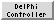

DelPhiController 
DelPhiController is an interface to
DelPhi, which uses the finite-difference
Poisson-Boltzmann equation to calculate electrostatic potentials
in and around molecules. DelPhi is not included with Chimera;
DelPhiController works with the academic version
available from the
Honig Lab.
For more details, consult the DelPhi documentation
[online manual]
[PDF manual].
The resulting electrostatic potentials can be visualized with
Electrostatic Surface Coloring
or displayed as isosurfaces with
Volume Viewer.
See also:
Coulombic Surface Coloring
There are several ways to start
DelPhiController, a tool in the Surface/Binding Analysis
and Volume Data categories
(including from the Volume Viewer Tools menu).
It has three sections organized like index cards:
Input, Parameter,
and Output. Clicking a tab
brings the corresponding card to the front.
Clicking Run initiates the DelPhi calculation;
the time required depends on the system and parameters, but generally
ranges from nearly instantaneous to minutes. The
Electrostatic Surface Coloring
tool will appear after the potential map (*.phi file) has been created.
Cancel dismisses the DelPhiController panel, while
Help opens this manual page in a browser window.
Input
At a minimum, the required inputs are
a structure of interest, a radius file,
a charge file, and the location of the
DelPhi executable. Any adjustments in
Parameter settings and
Output file names and locations
must be made before the calculation is started.
The structure can be a model
already open in Chimera or the contents of a local PDB file, specified
using the pulldown menu in the Molecule section of the dialog.
- if Chimera Model, use Browse... to specify
a model that has already been opened in Chimera
- if PDB File, use Browse... to specify the file
or enter a pathname manually
Only the atoms to be included in the calculation should be
present in the structure. It may be necessary to delete solvent,
ions, ligands, and alternate crystallographic locations of atoms,
and in some cases, to add hydrogens.
Ultimately, which atoms should be included
depends on the specific application and the availability of corresponding
radius and charge parameters.
Several tasks to prepare a model in Chimera
can be performed with the Dock
Prep tool (however, any charge assignments performed with
Dock Prep will be
ignored; DelPhi will only use the values in the charge
file specified with DelPhiController).
The locations of other input files can be entered manually
or filled in with Browse. When DelPhi has been run successfully with
DelPhiController, the input file locations are saved in a user's
preferences
file.
- DelPhi Executable (required) - name and location of
the DelPhi executable. If a pathname is not already stored in the
preferences
file, this will be filled in automatically provided the executable
is on the user's path (and, on a Mac, provided Chimera is
started from the terminal command line).
- Atomic Radii File (*.siz, required)
- a radius assignment file; examples are included in the
sample data download from the Honig group
[format information]
- Atomic Charge File (*.crg, required)
- a charge assignment file; examples are included in the
sample data download from the Honig group
[format information]
- Potential File (for focussing) (*.phi)
- a previously calculated electrostatic potential map,
not required unless focussing is being performed
- PDB Input for Site Potentials (*.pdb) - a PDB file, not required
unless an output site potentials file is specified;
however, if such an output is specified and this field is left blank,
the coordinates of the structure for which the
potential is being calculated will be used
Radius and charge files
from the Honig group may be used, or user-customized versions.
Each atom that does not match any specifications in the files
will be assigned a radius of 0 and charge of 0.
The log file should be checked to
see if radii and charges have been assigned properly.
It may also be helpful to generate a modified PDB file.
To achieve the correct assignments, it may be necessary to
- add or edit specifications in the assignment files
so they will match atom/residue names in the structure
- edit atom/residue names in the structure so they will
match specifications in the assignment files
Parameter
DelPhi uses many parameters, and although reasonable defaults are supplied,
what values are optimal will depend on the situation.
Note that the defaults in DelPhiController may differ from those
described in the DelPhi documentation
[parameter list].
Basic:
- Automatic Convergence (on by default)
- automatically calculate the number of iterations needed to attain convergence
- Calculate GRASP Surface (off by default)
- generate a GRASP-format surface file named grasp.srf
in the same location as the output electrostatic
potential map
- Box Fill (%) (60 by default)
- percentage of the grid that the largest dimension (X, Y, or Z)
of the structure will fill. Smaller percentages will increase the accuracy
of the boundary conditions, but yield a coarser representation of the
molecule. For a single run
(i.e., when focussing is not done),
reasonable compromise values are ~60% for viewing potentials outside a
protein, ~90% for solvation energy calculations.
- Grid Scale (1.2 by default)
- grid resolution, points per Å
- Probe Radius (1.4 by default)
- radius (Å) of the solvent probe used to define the solvent-excluded
surface; values of 1.4-1.8 Å are reasonable for water
Advanced:
- Fancy Charge Distribution (off by default)
- distribute charges to grid points using a spherical distribution
(otherwise linear cubical interpolation will be used)
- Log File Convergence (off by default)
- write convergence information to the output log file
- Log File Potentials (off by default)
- write potentials to the output log file
- Periodic Boundary (X) (off by default)
- Periodic Boundary (Y) (off by default)
- Periodic Boundary (Z) (off by default)
- Boundary Conditions
- how to set boundary potentials where
periodicity is not used
- Zero
- Debye-Huckel Dipole
- Focussing
- use a potential map from a previous run to set the
boundary conditions for the current run
(requires an input electrostatic potential map)
- Debye-Huckel Total (default)
- Coulombic; recommended unless focussing is being performed
- Interior Dielectric Constant (2 by default)
- dielectric constant inside the molecule;
2 represents electronic polarizability
- Exterior Dielectric Constant (80 by default)
- dielectric constant outside the molecule; 80 approximates water
- Grid Convergence (0.0 by default)
- Ionic Strength (0.0 by default)
- ionic strength (M) of the solvent; physiological ionic strength
is approximately 0.145 M
- Ion Radius (0.0 by default)
- thickness (Å) of the ion exclusion layer, relevant when ionic
strength > 0.0; a value of 2.0 Å is reasonable for sodium chloride
- Non-Linear Iterations (0 by default)
Output
The results of any requested Energy calculations will be
written to the log file.
- Total Grid
- charge multiplied by potential, summed over all charges within the grid;
contains the real electrostatic energy plus the grid self-energy
- Reaction Field
- interaction of all charges with the induced surface charge within the grid;
solvation energy is generally obtained by taking the difference
in this value between calculations using different exterior dielectric constants
- Coulombic
- energy calculated with Coulomb's law to bring all charges
from infinity to their locations in the interior dielectric medium
Output files:
- Potential File (phimap) (*.phi)
- DelPhi electrostatic potential map;
potentials are in kT/e (0.593 kcal/mol at 25°C)
- Site Potentials File (*.frc)
- file containing the potentials and fields at coordinates
from an input file "for site potentials"
- Dielectric Map File (*.eps) - binary dielectric bit map
- Modified PDB File (*.pdb)
- coordinates of the input structure in PDB format, except with
the assigned radius and charge of each atom placed in columns
55-60 (replacing occupancy) and 61-67
- Log File (*.log)
- always produced; reports control parameter settings,
calculation times, and other information
UCSF Computer Graphics Laboratory / January 2009